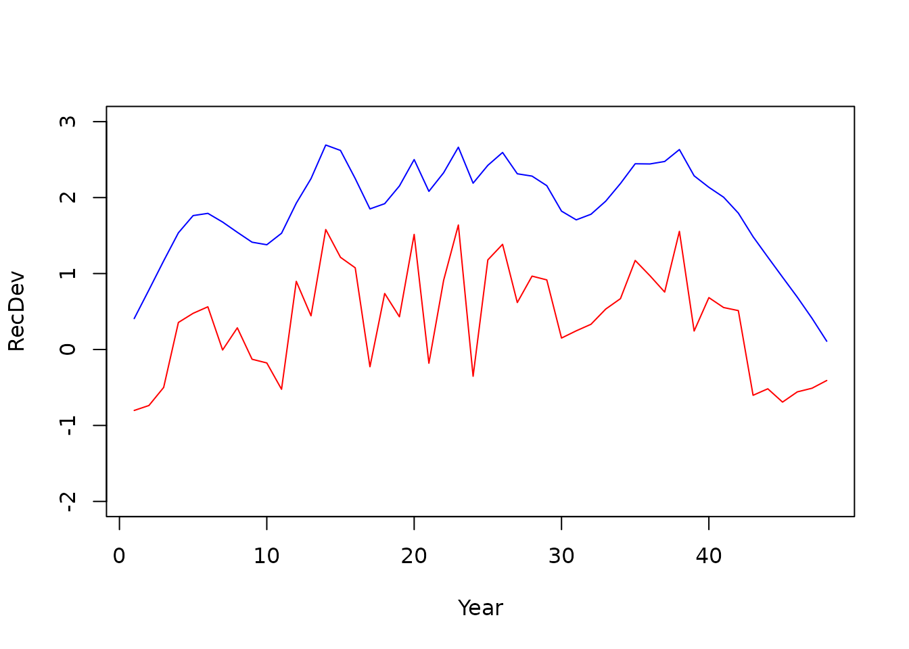

A dynamic structural equation model (dsem) specifies how a set of
time-series affect each other using an arrow lag notation, and computes
a joint density over all time-series. Within the context of a stock
assessment, the time-series we are primarily focused on are deviation
process errors (e.g., recruitment), and how these process errors might
be explained by environmental covariates. In SPoRC, various
population processes can be linked to a dsem model, thereby replacing
the process error penalty a given process originally had (e.g., iid
recruitment deviations) with a dsem density (which can express iid
recruitment deviations and more). In the following, we demonstrate how a
dsem can be specified (Thorson et al. 2024) using SPoRC,
and the various processes to which a dsem can be linked. Specifically,
we first demonstrate the dsem model and the mathematical underpinnings
of it, fit a dsem within the context of a stock assessment model,
conduct a self test and cross test (more on this later), illustrate dsem
forecasting capabilities (more on this later), and conclude with a
closed loop simulation using a dsem integrated model (more on this
later).
What a dsem is
Arrow and Lag notation
In general, a dsem can be specified using arrow and lag notation (and
see Thorson et al. 2024 for further details). Here, we specify one arrow
per line, which follows the nomenclature of
from -> to, lag, name, start. The time-series
from, lag years earlier, affects the
time-series to. The coefficient is the parameter
name, or is fixed at start when the name is
set to NA. This formulation therefore specifies a path
coefficient in a dsem model (i.e., analogous to a regression coefficient
in a linear model). An sd line can then be specified using a
double-headed arrow notation a <-> a, 0, name, start,
while a covariance between two series’ innovations is
a <-> b, 0, name, start. A name used on two arrows is
one shared parameter (i.e., the same name in two lines). An example is
provided below where we specify that an environmental covariate in year
x has an impact on recruitment in year x,
while the environmental covariate itself follows an AR(1) like process
.
Process error for the environmental covariate and recruitment deviations
is then specified as well.
arrows <- c("env -> rec, 0, b_env, 0.5", # this year's covariate affects this year's recruitment
"env -> env, 1, rho, 0.5", # the covariate follows itself from last year
"env <-> env, 0, sd_env, 0.5", # covariate innovation sd
"rec <-> rec, 0, sd_rec, 0.5") # recruitment innovation sd
m <- read_dsem_arrows(arrows, variables = c("env", "rec"))
m$arrows[, c("type", "from", "to", "lag", "name")]
#> type from to lag name
#> 1 path env rec 0 b_env
#> 2 path env env 1 rho
#> 3 sd env env 0 sd_env
#> 4 sd rec rec 0 sd_recread_dsem_arrows is not used directly by the user but
can be a useful way to understand the various processes specified within
the dsem as well as where things fit within matrices used when
specifying a dsem.
Going from arrows to a density function
Building off of this simplified example, we hope to provide intuition
for how a dsem likelihood is computed. In this case, we continue using
the env time-series and rec time-series, while
specifying three years and the four arrows written as above. Here, we
write the values as a matrix / grid, years in the rows and series in the
column, and number the cells series by series:
env rec
year 1 1 4
year 2 2 5
year 3 3 6Note that each cell has an innovation (i.e., the part that the arrows
themselves do not explain). For example, the recruitment innovation in
year 2 is cell 5 minus b_env times cell 2, because
env -> rec, 0:
The covariate innovation in year 2 is cell 2 minus rho
times cell 1, given that env -> env, 1:
Note that year 1 has nothing before it so the covariate innovation is
just cell 1. We can then collect all those subtractions into a matrix
called B with one row per cell: e.g., row 5 has
b_env in column 2, row 2 has rho in column 1.
Then the vector of innovations can be expressed as:
where
- is the grid stacked into one vector of length 6, cell order as above
- is each cell’s mean, a constant per series (zero for a deviation)
- is the 6 by 6 matrix of path coefficients, row holding the coefficients on the cells that point into cell
- is the identity, so has ones on the diagonal and minus each coefficient off it
- is the vector of innovations, one per cell
Written out in full for this 3-year, 2-series example, is (rows are the cell being predicted, columns are the cell doing the predicting):
Rows 2-3 hold env -> env, 1, rho (one step off the
diagonal within the env block), rows 4–6 hold
env -> rec, 0, b_env (the diagonal of the lower-left
block, since the lag is 0), and row 1 is empty because year 1 has no
previous values. Given that, it follows that:
Writing the centered values as , and taking as it is for a deviation series, multiplying through recovers every innovation at once:
Next, the two <-> lines then fill a diagonal
matrix of innovation standard deviations:
The two <-> lines give the variance of each
innovation:
and
,
with all innovations assumed to be independent. From these, we can work
out the variance of the time-series themselves, one cell at a time,
using the same equations as above.
In the case of the covariate, year 1 is only its own innovation, so:
Year 2 is . The two terms are independent, so their variances add:
Lastly, year 3 works the same way:
In words, each year keeps a shrunken copy of last year’s variability and adds a new shock. For , this levels off at (i.e., it is stationary).
For recruitment defined as , the variance can be written as:
Recruitment variability is its own shock plus whatever the covariate passes through . When , this is just every year, which is the usual iid recruitment deviation.
In addition to the variances, the covariances can also be written out as:
Note that recruitment deviations become autocorrelated even though
there is no rec -> rec arrow, because they inherit the
covariate’s autocorrelation through
.
Putting this together in a compact matrix form, this can be expressed
as:
Here, substitutes the equations into each other, as we did by hand above. Each row writes a cell as a sum of the innovations that flow into it:
For example, row 3 says . The innovations themselves are independent, with variance:
Multiplying these out, and writing , , and for the covariate variances derived above, the full variance is:
The structure of the covariance can then be seen as:
- The top-left block is the covariate’s AR(1) variance.
- The off-diagonal blocks are that same block scaled by .
- The bottom-right block is that same block scaled by , plus recruitment’s own on the diagonal.
Every entry of is non-zero, because every cell shares at least one innovation with every other cell (only in one direction for later years).
In practice, the density is evaluated using the precision rather than . Written out, is sparse:
The non-zero entries in
correspond exactly to the arrows. There is one entry for each
env -> env link between adjacent years and one for each
env -> rec link in the same year. A zero means two cells
are independent given all the others (conditional independence, which
induces sparsity). For example,
and
are unrelated once
and
are known.
is built directly from the sparse
without inverting anything, which is why dsem (and RTMB) can evaluate
the density efficiently even when there are many years and series. An
example of this is shown below.
cells <- SPoRC:::get_dsem_cells(m, n_grid_yrs = 3) # internal helpers, so the package prefix
parts <- SPoRC:::get_dsem_matrices(dsem_beta = c(b_env = 0.5, rho = 0.6), ln_dsem_sd = log(c(sd_env = 1, sd_rec = 0.8)),
dsem_model = m, dsem_cells = cells)
as.matrix(parts$IminusB)
#> [,1] [,2] [,3] [,4] [,5] [,6]
#> [1,] 1.0 0.0 0.0 0 0 0
#> [2,] -0.6 1.0 0.0 0 0 0
#> [3,] 0.0 -0.6 1.0 0 0 0
#> [4,] -0.5 0.0 0.0 1 0 0
#> [5,] 0.0 -0.5 0.0 0 1 0
#> [6,] 0.0 0.0 -0.5 0 0 1
parts$sd_cell
#> [1] 1.0 1.0 1.0 0.8 0.8 0.8Conditional and Marginal Variance in dsem
A dsem time-series has two ways to represent spread, and the sd line
(e.g., rec <-> rec, 0, sd_rec, 0.5) can describe
either one:
- Conditional (the default): the sd line is the size of each year’s new shock, . It is “conditional” because it is how much the series would still vary if we already knew last year’s value and any covariates pointing in. It is analogous to the residual sd in a regression. The series itself ends up more variable than this, because the arrows pass variability forward from the past.
- Marginal: the sd line is the size of the series itself, , i.e., how much the series itself varies overall, including what goes in through the arrows. It is analogous to the raw sd of in a regression. The model then works out how big each year’s shock must be to hit that target.
The two are equal only when no arrows point into the series. The
dsem_variance setting in the setup functions (introduced
later) chooses which one the sd line fixes.
Example: an AR(1) series
Let’s use an AR1 series to motivate the difference between conditional and marginal variance, where with sd line . Substituting back, year 3 is a sum of past innovations, with older ones shrunk by :
The two parameterizations fix opposite sides of this equation:
-
"conditional"(the default) sets every year. The series’ spread then grows and settles at (i.e., the stationary variance of ). -
"diagonal"/"marginal"set every year and then solve backwards for the innovation (i.e., figures out what the innovations should be to satisfy the condition).
With and :
| Year | Conditional | Conditional | Marginal | Marginal |
|---|---|---|---|---|
| 1 | 1 | 1.00 | 1 | 1 |
| 2 | 1 | 1.25 | 0.87 | 1 |
| 3 | 1 | 1.31 | 0.87 | 1 |
| 1 | 1.33 | 0.87 | 1 |
In short, under conditional is the size of each year’s new shock. Under marginal, is the size of the swings you actually see in the series.
Note that a random walk () cannot use the marginal form. The past alone already fills the target (), which leaves no room for new noise, so the setup refuses that pairing (i.e., because the random walk series is non-stationary).
Why it matters for recruitment
The choice matters most for recruitment. Take
env -> rec, 0, b_env, so each year’s recruitment
deviation is the covariate’s effect plus a recruitment shock:
The two pieces are independent, so their variances add:
To make this concrete, suppose
,
,
and the sd line is sd_rec
.
The covariate’s contribution is then
,
and the two settings split things differently:
| Covariate part | Shock part, | Total, | Total sd | |
|---|---|---|---|---|
| No covariate () | 0 | 0.36 | 0.36 | 0.60 |
| Conditional | 0.25 | 0.78 | ||
| Marginal | 0.25 | 0.60 |
- Thus, under conditional,
sd_recfixes the shock, so the covariate adds variability on top of it. Recruitment deviations become more variable (sd 0.78) than in a model without the covariate. - By contrast, under marginal,
sd_recfixes the total, so the covariate takes a share of it. Recruitment deviations keep the same spread (sd 0.60) as an iid model, and the covariate explains of it, leaving a smaller shock (sd 0.33).
In other words, marginal keeps sd_rec comparable to a
standard assessment with iid recruitment deviations. Conditional keeps
it comparable to dsem, where sd_rec is the
variability left over after the covariate.
Diagonal versus marginal
In general, "diagonal" and "marginal" both
read the sd line as the spread of the series, i.e.,
.
They differ only in how they handle covariance between series
(a <-> b). Without covariance specified, the two give
identical results.
Consider the recruitment example again where,
,
and add env <-> rec, so the environmental and
recruitment innovations are themselves correlated (correlation
).
The two pieces of
are then no longer independent, and their variances no longer simply
add. Therefore, a cross term appears:
- In this context,
"diagonal"solves for the shock as if the cross term were not there, i.e., . The cross term is then added on top, so the series misses the target. -
"marginal"includes the cross term when solving. Because the unknown shock sd appears in the cross term as well, there is no simple closed form, so the model finds it with a short fixed-point iteration (guess, update, repeat until it converges to some solution).
Using the same numbers as above (, , target ) plus :
| Shock variance | Covariate part | Cross term | Total | |
|---|---|---|---|---|
| Diagonal | 0.25 | 0.46 (misses 0.36) | ||
| Marginal | 0.046 | 0.25 | 0.36 (hits target) |
In practice, use "diagonal" when there are no covariance
lines, since it is simpler and gives the same answer. However, we
recommend specifying "marginal" when there are covariance
lines and you need the series’ spread to equal the sd line exactly.
Series observed with error
In the above, we assumed that the grid holds a series observed without error, and the arrows specify how it may move from year to year. However, this is rarely the case, where there is often observation error. In such a case, this can be specified as:
where
is what you measured in year
and
is whatever density suits the measurement. That is what the
dsem_family argument does (more on this later). The mean of
is
through a link function, so that
sits on a scale where a normal makes sense: counts take a log and
is the log mean count, while proportions take a logit link instead.
dsem_family |
link | mean of | extra spread |
|---|---|---|---|
fixed |
identity | itself | none, and no observation density |
normal, gaussian
|
identity | estimated sd | |
gaussian_fixed_sd |
identity | one supplied per observation | |
lognormal |
log | median | estimated sd, log scale |
poisson |
log | none, set by the mean | |
bernoulli, binomial
|
logit | none, set by the mean | |
gamma, Gamma
|
log | estimated coefficient of variation | |
tweedie |
log | estimated sd and power |
Because
is an observation of the time-series and not the true time-series
itself,
(the true underlying state that generated the time-series) can be
estimated in every year, whether or not that year has an observation.
Thus,
becomes the random effect for that time-series, and the years you did
not observe are interpolated by the arrow-lag notation specified. In the
case where a year with no observation contributes no
term, the arrows decide what that value should be (i.e., its conditional
mean given the other years). For instance, under an AR1 it comes back as
with standard deviation
,
where
is the innovation sd. Under independent deviations it returns the series
mean at the full
.
Supplying known values is the one case with no observation density at
all, and there the series is the data and nothing is estimated for it
(i.e., dsem_family = fixed).
Using dsem inside an assessment model
Having described the underpinnings of a dsem model, we next seek to
integrate such a model class within the context of a stock assessment
model. The following example does so using recruitment deviations as the
series we attempt to model using a dsem. We use a contrived example of
the packaged GOA dusky rockfish fit (dusky_rtmb_model) and
demonstrate various ways in which dsem can be used to specify
recruitment deviations, ranging from penalized likelihood with iid
deviations, random effects with iid deviations, and environmental
linkages to recruitment. In the following example, we demonstrate a
penalized likelihood approach, which yields the same model results as
the GOA dusky vignette.
# setup base config
data("dusky_rtmb_model")
base <- list(data = dusky_rtmb_model$data, par = dusky_rtmb_model$parameters, map = dusky_rtmb_model$mapping, verbose = FALSE, store_config = FALSE)
# setup recruitment for dsem
pen_base <- Setup_Mod_Rec(
input_list = base,
do_rec_bias_ramp = 1,
bias_year = rep(length(base$data$years), 4),
sigmaR_switch = 1,
ln_sigmaR = array(-0.1068576, dim = c(2, base$data$n_pop, base$data$n_regions)),
rec_model = "mean_rec",
init_age_strc = 1,
ln_global_R0 = log(2.7),
t_spawn = base$data$t_spawn,
RecDevs_model = "dsem" # set recdev model as dsem
)
# setup dsem - penalized likelihood w/ sigmaR fixed
pen_recdev <- Setup_Mod_DSEM(
pen_base,
dsem_arrows = "
rec <-> rec, 0, NA, 0.8986536
",
dsem_data = NULL
)
# fit model
pen_recdev_mod <- fit_model(
pen_recdev$data,
pen_recdev$par,
pen_recdev$map,
NULL, silent = TRUE
)
# get sd report
pen_recdev_mod$sd_rep <- sdreport(pen_recdev_mod)
pen_recdev_mod$sd_rep
#> sdreport(.) result
#> Estimate Std. Error
#> ln_global_R0 1.043143e+00 0.11998074
#> ln_InitDevs -5.257375e-01 0.62311006
#> ln_InitDevs -5.680952e-01 0.63574810
#> ln_InitDevs -5.542043e-01 0.63640868
#> ln_InitDevs -6.142696e-01 0.63929572
#> ln_InitDevs -7.134141e-01 0.64029736
#> ln_InitDevs -8.081946e-01 0.63130111
#> ln_InitDevs -9.367116e-01 0.63382286
#> ln_InitDevs -9.965692e-01 0.62877758
#> ln_InitDevs -1.008470e+00 0.63106237
#> ln_InitDevs -9.995241e-01 0.63625409
#> ln_InitDevs -9.759925e-01 0.64078591
#> ln_InitDevs -9.463947e-01 0.64548678
#> ln_InitDevs -9.156647e-01 0.65066938
#> ln_InitDevs -8.857505e-01 0.65578365
#> ln_InitDevs -8.561040e-01 0.66093793
#> ln_InitDevs -8.267753e-01 0.66616243
#> ln_InitDevs -7.972086e-01 0.67155672
#> ln_InitDevs -7.679506e-01 0.67702695
#> ln_InitDevs -7.391797e-01 0.68254095
#> ln_InitDevs -7.108242e-01 0.68811112
#> ln_InitDevs -6.829066e-01 0.69373256
#> ln_InitDevs -6.553989e-01 0.69940990
#> ln_InitDevs -6.284536e-01 0.70511102
#> ln_InitDevs -6.021375e-01 0.71081879
#> ln_InitDevs -5.764641e-01 0.71652580
#> ln_InitDevs -5.514656e-01 0.72222003
#> ln_InitDevs -5.271836e-01 0.72788636
#> ln_InitDevs -5.035824e-01 0.73352635
#> ln_RecDevs -5.013247e-01 0.62221907
#> ln_RecDevs -4.435092e-01 0.62474088
#> ln_RecDevs -1.991349e-01 0.66054707
#> ln_RecDevs 6.096637e-01 0.55727179
#> ln_RecDevs 7.577637e-01 0.62645941
#> ln_RecDevs 8.109376e-01 0.55131619
#> ln_RecDevs 2.914522e-01 0.66027880
#> ln_RecDevs 5.369985e-01 0.48377835
#> ln_RecDevs 1.519536e-01 0.57425054
#> ln_RecDevs 8.620679e-02 0.50013782
#> ln_RecDevs -2.232118e-01 0.56482525
#> ln_RecDevs 1.151719e+00 0.24233816
#> ln_RecDevs 7.216159e-01 0.35705286
#> ln_RecDevs 1.838721e+00 0.18021536
#> ln_RecDevs 1.480816e+00 0.21996342
#> ln_RecDevs 1.333956e+00 0.21571937
#> ln_RecDevs 6.280117e-02 0.44847886
#> ln_RecDevs 9.962015e-01 0.22081534
#> ln_RecDevs 7.049473e-01 0.28066183
#> ln_RecDevs 1.775528e+00 0.15361070
#> ln_RecDevs 1.062535e-01 0.41268563
#> ln_RecDevs 1.175499e+00 0.20521056
#> ln_RecDevs 1.900187e+00 0.14973429
#> ln_RecDevs -5.176011e-02 0.48956380
#> ln_RecDevs 1.441764e+00 0.18314086
#> ln_RecDevs 1.649284e+00 0.17302691
#> ln_RecDevs 8.880795e-01 0.27369461
#> ln_RecDevs 1.231601e+00 0.21541989
#> ln_RecDevs 1.181117e+00 0.21694387
#> ln_RecDevs 4.245275e-01 0.33325095
#> ln_RecDevs 5.137750e-01 0.29736287
#> ln_RecDevs 6.021673e-01 0.28319472
#> ln_RecDevs 8.006671e-01 0.26124367
#> ln_RecDevs 9.398914e-01 0.26323772
#> ln_RecDevs 1.439355e+00 0.20810005
#> ln_RecDevs 1.240739e+00 0.24414469
#> ln_RecDevs 1.031174e+00 0.28900585
#> ln_RecDevs 1.821163e+00 0.19883188
#> ln_RecDevs 5.334778e-01 0.43208930
#> ln_RecDevs 9.551468e-01 0.33792063
#> ln_RecDevs 8.345406e-01 0.40870370
#> ln_RecDevs 7.976714e-01 0.44998879
#> ln_RecDevs -2.595073e-01 0.68947241
#> ln_RecDevs -1.657025e-01 0.71033310
#> ln_RecDevs -3.197950e-01 0.77163426
#> ln_RecDevs -1.703372e-01 0.82480525
#> ln_RecDevs -1.149960e-01 0.85111758
#> ln_RecDevs -6.392756e-06 0.89865073
#> ln_F_mean -3.158879e+00 0.12439878
#> ln_F_devs -3.683397e-01 0.38284609
#> ln_F_devs -8.386628e-01 0.37242937
#> ln_F_devs -6.548590e-01 0.37364913
#> ln_F_devs -9.482682e-02 0.38380901
#> ln_F_devs 1.303441e-01 0.38996555
#> ln_F_devs 1.591323e-01 0.39058135
#> ln_F_devs 2.889583e-01 0.39531925
#> ln_F_devs -1.140556e-01 0.38137875
#> ln_F_devs -1.585070e+00 0.36223720
#> ln_F_devs -1.984709e+00 0.35956843
#> ln_F_devs -1.988907e+00 0.35823603
#> ln_F_devs -1.224912e-02 0.35805311
#> ln_F_devs 1.907052e-01 0.35652294
#> ln_F_devs -2.063470e-02 0.33335285
#> ln_F_devs 9.245421e-02 0.32943533
#> ln_F_devs 9.593984e-01 0.13023137
#> ln_F_devs 8.969966e-01 0.13061739
#> ln_F_devs 8.284592e-01 0.12987587
#> ln_F_devs 7.339391e-01 0.12932564
#> ln_F_devs 4.047988e-01 0.12978166
#> ln_F_devs 3.441709e-01 0.12948680
#> ln_F_devs 4.747308e-01 0.12885926
#> ln_F_devs 8.293187e-01 0.12807800
#> ln_F_devs 6.103719e-01 0.12771351
#> ln_F_devs 3.687051e-01 0.12731588
#> ln_F_devs 4.251441e-01 0.12700562
#> ln_F_devs 3.017301e-01 0.12684874
#> ln_F_devs 1.346996e-01 0.12675356
#> ln_F_devs -9.285710e-02 0.12714403
#> ln_F_devs -6.093880e-02 0.12695465
#> ln_F_devs 2.084532e-01 0.12681741
#> ln_F_devs 2.461153e-01 0.12676685
#> ln_F_devs 4.370727e-02 0.12656656
#> ln_F_devs 4.141997e-02 0.12649221
#> ln_F_devs -1.819119e-01 0.12648059
#> ln_F_devs 2.593642e-01 0.12627564
#> ln_F_devs 5.881368e-02 0.12712734
#> ln_F_devs 5.044975e-02 0.12753530
#> ln_F_devs -2.385876e-02 0.12838330
#> ln_F_devs 1.508495e-01 0.12883076
#> ln_F_devs -8.868660e-02 0.12972577
#> ln_F_devs -1.568900e-02 0.13031426
#> ln_F_devs -1.873739e-01 0.13193671
#> ln_F_devs -3.428433e-01 0.13285383
#> ln_F_devs -8.811551e-02 0.13479762
#> ln_F_devs -2.157729e-01 0.13623878
#> ln_F_devs 8.146503e-02 0.13896690
#> ln_F_devs -3.543348e-01 0.14087558
#> fish_fixed_sel_pars 2.308789e+00 0.01463054
#> fish_fixed_sel_pars 9.024543e-01 0.07558503
#> srv_fixed_sel_pars 2.221258e+00 0.03451709
#> srv_fixed_sel_pars 1.544718e+00 0.09499803
#> ln_srv_q -2.789523e-01 0.11272184
#> Maximum gradient component: 1.62101e-10
# check if fit with dsem is the same with previous penalized fit (should be)
pen_recdev_mod$rep$jnLL # dsem
#> [1] 1425.732
dusky_rtmb_model$rep$jnLL # original
#> [1] 1425.732
# show plot
plot(pen_recdev_mod$rep$dsem_x_grid, ylab = 'RecDev', xlab = 'Year')
lines(as.vector(dusky_rtmb_model$rep$ln_RecDevs))Having shown the equivalence above, we next estimate recruitment
deviations as random effects using the dsem interface. Note that using
the dsem interface here to specify iid recruitment is also equivalent to
simply estimating sigmaR and treating recruitment
deviations as random effects (without the dsem interface):
# random effect deviations take the full lognormal correction, so no ramp
dsem_base <- Setup_Mod_Rec(
input_list = base,
do_rec_bias_ramp = 0,
sigmaR_switch = 1,
ln_sigmaR = array(-0.1068576, dim = c(2, base$data$n_pop, base$data$n_regions)),
rec_model = "mean_rec",
init_age_strc = 1,
ln_global_R0 = log(2.7),
t_spawn = base$data$t_spawn,
RecDevs_model = "dsem"
)
# setup dsem - iid state space w/ sigmaR estimate
re_dsem_recdev <- Setup_Mod_DSEM(
dsem_base,
dsem_arrows = "
rec <-> rec, 0, sd_rec, 0.8986536
",
dsem_data = NULL
)
# fit model
re_dsem_recdev_mod <- fit_model(
re_dsem_recdev$data,
re_dsem_recdev$par,
re_dsem_recdev$map,
"ln_RecDevs", silent = TRUE
)
# get sd report
re_dsem_recdev_mod$sd_rep <- sdreport(re_dsem_recdev_mod)
re_dsem_recdev_mod$sd_rep
#> sdreport(.) result
#> Estimate Std. Error
#> ln_global_R0 1.304274926 0.11809189
#> ln_InitDevs -0.799762087 0.63201967
#> ln_InitDevs -0.877761220 0.65777195
#> ln_InitDevs -0.868388191 0.65636114
#> ln_InitDevs -0.932008594 0.65903109
#> ln_InitDevs -1.035474993 0.66022119
#> ln_InitDevs -1.135706204 0.65138241
#> ln_InitDevs -1.272093107 0.65611215
#> ln_InitDevs -1.336315765 0.65194581
#> ln_InitDevs -1.352467673 0.65482299
#> ln_InitDevs -1.348165517 0.66030234
#> ln_InitDevs -1.327462044 0.66480660
#> ln_InitDevs -1.299350702 0.66935925
#> ln_InitDevs -1.269880750 0.67437984
#> ln_InitDevs -1.241054019 0.67935843
#> ln_InitDevs -1.212372650 0.68438723
#> ln_InitDevs -1.183990879 0.68948325
#> ln_InitDevs -1.155421096 0.69473620
#> ln_InitDevs -1.127191474 0.70005635
#> ln_InitDevs -1.099468872 0.70541406
#> ln_InitDevs -1.072187073 0.71081928
#> ln_InitDevs -1.045367805 0.71626646
#> ln_InitDevs -1.018987133 0.72175801
#> ln_InitDevs -0.993185942 0.72726464
#> ln_InitDevs -0.968024432 0.73277058
#> ln_InitDevs -0.943514826 0.73826803
#> ln_InitDevs -0.919685307 0.74374553
#> ln_InitDevs -0.896571583 0.74918905
#> ln_InitDevs -0.874141184 0.75459850
#> ln_F_mean -3.159842264 0.12430907
#> ln_F_devs -0.394662936 0.38456726
#> ln_F_devs -0.864924501 0.37373702
#> ln_F_devs -0.677186061 0.37503476
#> ln_F_devs -0.110474716 0.38567894
#> ln_F_devs 0.119218175 0.39213773
#> ln_F_devs 0.150158306 0.39262403
#> ln_F_devs 0.283320818 0.39762031
#> ln_F_devs -0.121490871 0.38274734
#> ln_F_devs -1.595262510 0.36302305
#> ln_F_devs -1.992930381 0.36017784
#> ln_F_devs -1.994854653 0.35868031
#> ln_F_devs -0.009497495 0.35942596
#> ln_F_devs 0.196768473 0.35830695
#> ln_F_devs -0.018591007 0.33398333
#> ln_F_devs 0.095561736 0.33008261
#> ln_F_devs 0.957731478 0.13044130
#> ln_F_devs 0.895776779 0.13081376
#> ln_F_devs 0.827934721 0.13001832
#> ln_F_devs 0.734300796 0.12941356
#> ln_F_devs 0.405702169 0.12982976
#> ln_F_devs 0.345446010 0.12951452
#> ln_F_devs 0.476338468 0.12887793
#> ln_F_devs 0.831200654 0.12809249
#> ln_F_devs 0.612791792 0.12772784
#> ln_F_devs 0.371441810 0.12733377
#> ln_F_devs 0.427924895 0.12702623
#> ln_F_devs 0.304676941 0.12687326
#> ln_F_devs 0.137974570 0.12678515
#> ln_F_devs -0.089501962 0.12718893
#> ln_F_devs -0.057453883 0.12700344
#> ln_F_devs 0.212131006 0.12686375
#> ln_F_devs 0.249898155 0.12681940
#> ln_F_devs 0.047761032 0.12663732
#> ln_F_devs 0.045730173 0.12657317
#> ln_F_devs -0.177348977 0.12658525
#> ln_F_devs 0.263970321 0.12637022
#> ln_F_devs 0.063951350 0.12725868
#> ln_F_devs 0.055930699 0.12768480
#> ln_F_devs -0.017957025 0.12857000
#> ln_F_devs 0.156981423 0.12903389
#> ln_F_devs -0.082146565 0.12999134
#> ln_F_devs -0.008950811 0.13061849
#> ln_F_devs -0.180153751 0.13233194
#> ln_F_devs -0.335426354 0.13331839
#> ln_F_devs -0.080347508 0.13535055
#> ln_F_devs -0.207413708 0.13687315
#> ln_F_devs 0.090568968 0.13973233
#> ln_F_devs -0.344616047 0.14173006
#> fish_fixed_sel_pars 2.308637637 0.01463070
#> fish_fixed_sel_pars 0.901565209 0.07561975
#> srv_fixed_sel_pars 2.219947359 0.03440640
#> srv_fixed_sel_pars 1.540144173 0.09500949
#> ln_srv_q -0.276813841 0.11249676
#> ln_dsem_sd -0.101665306 0.10025550
#> Maximum gradient component: 1.864024e-09
# setup w/o dsem. one sigmaR across the early and late period
nodsem_base <- Setup_Mod_Rec(
input_list = base,
do_rec_bias_ramp = 0,
sigmaR_switch = 1,
ln_sigmaR = array(-0.1068576, dim = c(2, base$data$n_pop, base$data$n_regions)),
rec_model = "mean_rec",
init_age_strc = 1,
ln_global_R0 = log(2.7),
t_spawn = base$data$t_spawn,
RecDevs_model = "iid",
sigmaR_spec = "est_shared_all"
)
# fit model w/o dsem
re_nodsem_recdev_mod <- fit_model(
nodsem_base$data,
nodsem_base$par,
nodsem_base$map,
"ln_RecDevs", silent = TRUE
)
# get sd report
re_nodsem_recdev_mod$sd_rep <- sdreport(re_nodsem_recdev_mod)
re_nodsem_recdev_mod$sd_rep
#> sdreport(.) result
#> Estimate Std. Error
#> ln_global_R0 1.304274926 0.11809189
#> ln_InitDevs -0.799762087 0.63201967
#> ln_InitDevs -0.877761220 0.65777195
#> ln_InitDevs -0.868388191 0.65636114
#> ln_InitDevs -0.932008594 0.65903109
#> ln_InitDevs -1.035474993 0.66022119
#> ln_InitDevs -1.135706204 0.65138241
#> ln_InitDevs -1.272093107 0.65611215
#> ln_InitDevs -1.336315765 0.65194581
#> ln_InitDevs -1.352467673 0.65482299
#> ln_InitDevs -1.348165517 0.66030234
#> ln_InitDevs -1.327462044 0.66480660
#> ln_InitDevs -1.299350702 0.66935925
#> ln_InitDevs -1.269880750 0.67437984
#> ln_InitDevs -1.241054019 0.67935843
#> ln_InitDevs -1.212372650 0.68438723
#> ln_InitDevs -1.183990879 0.68948325
#> ln_InitDevs -1.155421096 0.69473620
#> ln_InitDevs -1.127191474 0.70005635
#> ln_InitDevs -1.099468872 0.70541406
#> ln_InitDevs -1.072187073 0.71081928
#> ln_InitDevs -1.045367805 0.71626646
#> ln_InitDevs -1.018987133 0.72175801
#> ln_InitDevs -0.993185942 0.72726464
#> ln_InitDevs -0.968024432 0.73277058
#> ln_InitDevs -0.943514826 0.73826803
#> ln_InitDevs -0.919685307 0.74374553
#> ln_InitDevs -0.896571583 0.74918905
#> ln_InitDevs -0.874141184 0.75459850
#> ln_sigmaR -0.101665306 0.10025550
#> ln_F_mean -3.159842264 0.12430907
#> ln_F_devs -0.394662936 0.38456726
#> ln_F_devs -0.864924501 0.37373702
#> ln_F_devs -0.677186061 0.37503476
#> ln_F_devs -0.110474716 0.38567894
#> ln_F_devs 0.119218175 0.39213773
#> ln_F_devs 0.150158306 0.39262403
#> ln_F_devs 0.283320818 0.39762031
#> ln_F_devs -0.121490871 0.38274734
#> ln_F_devs -1.595262510 0.36302305
#> ln_F_devs -1.992930381 0.36017784
#> ln_F_devs -1.994854653 0.35868031
#> ln_F_devs -0.009497495 0.35942596
#> ln_F_devs 0.196768473 0.35830695
#> ln_F_devs -0.018591007 0.33398333
#> ln_F_devs 0.095561736 0.33008261
#> ln_F_devs 0.957731478 0.13044130
#> ln_F_devs 0.895776779 0.13081376
#> ln_F_devs 0.827934721 0.13001832
#> ln_F_devs 0.734300796 0.12941356
#> ln_F_devs 0.405702169 0.12982976
#> ln_F_devs 0.345446010 0.12951452
#> ln_F_devs 0.476338468 0.12887793
#> ln_F_devs 0.831200654 0.12809249
#> ln_F_devs 0.612791792 0.12772784
#> ln_F_devs 0.371441810 0.12733377
#> ln_F_devs 0.427924895 0.12702623
#> ln_F_devs 0.304676941 0.12687326
#> ln_F_devs 0.137974570 0.12678515
#> ln_F_devs -0.089501962 0.12718893
#> ln_F_devs -0.057453883 0.12700344
#> ln_F_devs 0.212131006 0.12686375
#> ln_F_devs 0.249898155 0.12681940
#> ln_F_devs 0.047761032 0.12663732
#> ln_F_devs 0.045730173 0.12657317
#> ln_F_devs -0.177348977 0.12658525
#> ln_F_devs 0.263970321 0.12637022
#> ln_F_devs 0.063951350 0.12725868
#> ln_F_devs 0.055930699 0.12768480
#> ln_F_devs -0.017957025 0.12857000
#> ln_F_devs 0.156981423 0.12903389
#> ln_F_devs -0.082146565 0.12999134
#> ln_F_devs -0.008950811 0.13061849
#> ln_F_devs -0.180153751 0.13233194
#> ln_F_devs -0.335426354 0.13331839
#> ln_F_devs -0.080347508 0.13535055
#> ln_F_devs -0.207413708 0.13687315
#> ln_F_devs 0.090568968 0.13973233
#> ln_F_devs -0.344616047 0.14173006
#> fish_fixed_sel_pars 2.308637637 0.01463070
#> fish_fixed_sel_pars 0.901565209 0.07561975
#> srv_fixed_sel_pars 2.219947359 0.03440640
#> srv_fixed_sel_pars 1.540144173 0.09500949
#> ln_srv_q -0.276813841 0.11249676
#> Maximum gradient component: 2.801087e-09
# should give equivalent results
re_dsem_recdev_mod$rep$jnLL
#> [1] 1432.773
re_nodsem_recdev_mod$rep$jnLL
#> [1] 1432.773
# show plot
plot(re_dsem_recdev_mod$rep$dsem_x_grid, ylab = 'RecDev', xlab = 'Year')
lines(as.vector(re_nodsem_recdev_mod$rep$ln_RecDevs))Next, we can specify an AR(1) process on recruitment deviations for Dusky Rockfish. This is done using arrow-lag notation, and is shown in the following:
# random effect deviations take the full lognormal correction, so no ramp
dsem_base <- Setup_Mod_Rec(
input_list = base,
do_rec_bias_ramp = 0,
sigmaR_switch = 1,
ln_sigmaR = array(-0.1068576, dim = c(2, base$data$n_pop, base$data$n_regions)),
rec_model = "mean_rec",
init_age_strc = 1,
ln_global_R0 = log(2.7),
t_spawn = base$data$t_spawn,
RecDevs_model = "dsem"
)
# setup dsem - ar1 state space w/ sigmaR estimate
re_ar1_dsem_recdev <- Setup_Mod_DSEM(
dsem_base,
dsem_arrows = "
rec -> rec, 1, ar1_rho, 0.5
rec <-> rec, 0, sd_rec, 0.8986536
",
dsem_data = NULL
)
# fit model
re_ar1_dsem_recdev_mod <- fit_model(
re_ar1_dsem_recdev$data,
re_ar1_dsem_recdev$par,
re_ar1_dsem_recdev$map,
"ln_RecDevs", silent = TRUE
)
# get sd report
re_ar1_dsem_recdev_mod$sd_rep <- sdreport(re_ar1_dsem_recdev_mod)
re_ar1_dsem_recdev_mod$sd_rep
#> sdreport(.) result
#> Estimate Std. Error
#> ln_global_R0 0.015210019 0.150267651
#> ln_InitDevs 0.017970558 0.247186935
#> ln_InitDevs 0.028529269 0.248560725
#> ln_InitDevs 0.030321494 0.249041221
#> ln_InitDevs 0.016317745 0.248012829
#> ln_InitDevs -0.005425592 0.246432031
#> ln_InitDevs -0.024975855 0.244573769
#> ln_InitDevs -0.048237866 0.243456847
#> ln_InitDevs -0.061028675 0.242559159
#> ln_InitDevs -0.064452669 0.242494803
#> ln_InitDevs -0.063734533 0.242776021
#> ln_InitDevs -0.061676078 0.243007040
#> ln_InitDevs -0.059537557 0.243212889
#> ln_InitDevs -0.057500604 0.243423488
#> ln_InitDevs -0.055798658 0.243600636
#> ln_InitDevs -0.054303350 0.243758303
#> ln_InitDevs -0.052908613 0.243906995
#> ln_InitDevs -0.051537037 0.244053427
#> ln_InitDevs -0.050227836 0.244193659
#> ln_InitDevs -0.048995251 0.244326228
#> ln_InitDevs -0.047823814 0.244452623
#> ln_InitDevs -0.046710190 0.244573141
#> ln_InitDevs -0.045644295 0.244688750
#> ln_InitDevs -0.044638615 0.244798171
#> ln_InitDevs -0.043696561 0.244901028
#> ln_InitDevs -0.042813846 0.244997715
#> ln_InitDevs -0.041989304 0.245088322
#> ln_InitDevs -0.041222770 0.245172842
#> ln_InitDevs -0.040505230 0.245252163
#> ln_F_mean -3.197452025 0.131565021
#> ln_F_devs -0.177987864 0.367405904
#> ln_F_devs -0.621544056 0.364379477
#> ln_F_devs -0.455414276 0.363208520
#> ln_F_devs 0.048172102 0.362449622
#> ln_F_devs 0.239489245 0.362033411
#> ln_F_devs 0.259904216 0.362002547
#> ln_F_devs 0.358998203 0.362234092
#> ln_F_devs -0.005361776 0.361392984
#> ln_F_devs -1.419179041 0.358986751
#> ln_F_devs -1.841570430 0.357217583
#> ln_F_devs -1.872790886 0.355458333
#> ln_F_devs -0.026569402 0.338955463
#> ln_F_devs 0.132739307 0.335065092
#> ln_F_devs -0.018916533 0.325336536
#> ln_F_devs 0.082485967 0.322454246
#> ln_F_devs 1.016092417 0.130985162
#> ln_F_devs 0.933277882 0.131258524
#> ln_F_devs 0.844881349 0.130423404
#> ln_F_devs 0.737595677 0.129732688
#> ln_F_devs 0.404809068 0.130073468
#> ln_F_devs 0.345743090 0.129680082
#> ln_F_devs 0.474772556 0.129025013
#> ln_F_devs 0.824164908 0.128258507
#> ln_F_devs 0.594464211 0.127869436
#> ln_F_devs 0.346008625 0.127444071
#> ln_F_devs 0.401175789 0.127151812
#> ln_F_devs 0.274589796 0.127028547
#> ln_F_devs 0.101533520 0.126948176
#> ln_F_devs -0.127864377 0.127302669
#> ln_F_devs -0.097574191 0.127169225
#> ln_F_devs 0.167873925 0.127121739
#> ln_F_devs 0.203331256 0.127160215
#> ln_F_devs -0.002297125 0.126990635
#> ln_F_devs -0.008071041 0.127011427
#> ln_F_devs -0.234415128 0.127032911
#> ln_F_devs 0.205785443 0.127050462
#> ln_F_devs -0.003344734 0.128005000
#> ln_F_devs -0.018183473 0.128571272
#> ln_F_devs -0.100122386 0.129496050
#> ln_F_devs 0.070425365 0.130149110
#> ln_F_devs -0.174847495 0.131032560
#> ln_F_devs -0.104684357 0.131735867
#> ln_F_devs -0.283553303 0.133310943
#> ln_F_devs -0.441363024 0.134278173
#> ln_F_devs -0.190941404 0.136196142
#> ln_F_devs -0.325970317 0.137737910
#> ln_F_devs -0.037052356 0.140449170
#> ln_F_devs -0.478694944 0.142641873
#> fish_fixed_sel_pars 2.309180548 0.014663319
#> fish_fixed_sel_pars 0.897264867 0.076046607
#> srv_fixed_sel_pars 2.230364273 0.035223796
#> srv_fixed_sel_pars 1.556844629 0.095848072
#> ln_srv_q -0.353060150 0.125016419
#> dsem_beta 1.032106186 0.009070677
#> ln_dsem_sd -1.401610081 0.163822223
#> Maximum gradient component: 7.063867e-07
# compare with iid version
plot(re_ar1_dsem_recdev_mod$rep$dsem_x_grid, ylab = 'RecDev', xlab = 'Year', col = 'blue', ylim = c(-2, 3), type = 'l')
lines(re_dsem_recdev_mod$rep$dsem_x_grid, col = 'red')
As shown in the plot above, the AR(1) process is a lot smoother
relative to an iid assumption, as would be expected.
Linking covariates to recruitment
A covariate can appear correlated with recruitment only because it
drives something else that matters. For instance, a large-scale climate
index x might affect local temperature y,
which then affects recruitment. Regressed on its own x
looks to be useful, but once y is in it has nothing left to
add. Defining a dsem writes both paths at once and allows us to better
understand causal drivers, which is the case Champagnat et al. (2026)
make for ecosystem and climate-linked assessments generally:
where
and
are the two covariates in year
,
is the recruitment deviation, each
is the path coefficient named on its arrow, and each
is that series’ innovation. The direct effect of x is
and its indirect effect is
.
Under full mediation
by the way we have defined this model, so the
term drops out and recruitment depends on x only through
y.
We use the packaged dusky recruitment deviations and build two
contrived simulated covariates. y is those deviations plus
noise, so it relates to recruitment directly. x is
y plus noise, so it relates to recruitment only through
y. Both are standardized.
set.seed(777)
rec_dev <- as.vector(dusky_rtmb_model$rep$ln_RecDevs[1,1,])
y <- as.vector(scale(rec_dev + rnorm(length(rec_dev), 0, 0.9)))
x <- as.vector(scale(y + rnorm(length(y), 0, 0.5)))
cov_df <- data.frame(year = base$data$years, x = x, y = y)
# x correlates with recruitment, but adds nothing once y is in the regression
c(cor_xy = cor(x, y),
cor_x_rec = cor(x, rec_dev),
cor_y_rec = cor(y, rec_dev),
partial_x = coef(lm(rec_dev ~ x + y))["x"])
#> cor_xy cor_x_rec cor_y_rec partial_x.x
#> 0.9194017 0.5773979 0.6561950 -0.1123701x correlates with recruitment at 0.58, which is what
regressing one covariate at a time would pick up, and its coefficient in
a regression holding both is -0.11.
Both fits below reuse dsem_base, the input list from the
comparison above, which already hands the recruitment deviations to the
dsem. Both covariates are standardized so their means are fixed at zero,
and both are observed in every year, so the recruitment deviations are
the only random effects.
fit_dsem_cov <- function(arrows) {
il <- Setup_Mod_DSEM(
dsem_base,
dsem_arrows = arrows,
dsem_data = cov_df,
dsem_mu_spec = c(x = 0, y = 0)
)
mod <- fit_model(il$data, il$par, il$map, "ln_RecDevs", silent = TRUE)
mod$sd_rep <- sdreport(mod)
mod$arrow_names <- c(il$data$dsem_model$beta_names, il$data$dsem_model$ln_sd_names)
mod
}
# x regressed on its own, with the mediator left out of recruitment
x_only <- fit_dsem_cov("
x <-> x, 0, sd_x, 1
x -> y, 0, b_xy, 0.9
y <-> y, 0, sd_y, 0.5
x -> rec, 0, b_x_rec, 0.3
rec <-> rec, 0, sd_rec, 0.8986536
")
# both paths in, so the fit can find a direct effect of x if one is there
both <- fit_dsem_cov("
x <-> x, 0, sd_x, 1
x -> y, 0, b_xy, 0.9
y <-> y, 0, sd_y, 0.5
x -> rec, 0, b_x_rec, 0
y -> rec, 0, b_y_rec, 0.3
rec <-> rec, 0, sd_rec, 0.8986536
")
# arrow estimates, named
lapply(list(x_only = x_only, both = both), function(m) {
tab <- summary(m$sd_rep, "fixed")
tab <- tab[rownames(tab) %in% c("dsem_beta", "ln_dsem_sd"), , drop = FALSE]
rownames(tab) <- m$arrow_names
round(tab, 4)
})
#> $x_only
#> Estimate Std. Error
#> b_xy 0.9194 0.0568
#> b_x_rec 0.6643 0.1579
#> sd_x -0.0105 0.1021
#> sd_y -0.9437 0.1021
#> sd_rec -0.2376 0.1121
#>
#> $both
#> Estimate Std. Error
#> b_xy 0.9194 0.0568
#> b_x_rec -0.0301 0.4081
#> b_y_rec 0.7181 0.3908
#> sd_x -0.0105 0.1021
#> sd_y -0.9437 0.1021
#> sd_rec -0.2638 0.1121Regressed on its own, x gets a direct effect of 0.664
with a standard error of 0.158. Put y in beside it and the
same coefficient is -0.030 against a standard error of 0.408, while
y takes 0.718. The path from x to
y comes back at 0.919 in both fits, since it is just the
path for the two covariates alone. Holding both paths in one fit is what
separates those effects, and regressing one covariate at a time cannot,
demonstrating the utility of a dsem approach.
References
Champagnat, J., Monnahan, C. C., Sullivan, J. Y., Thorson, J. T., Shotwell, S. K., Rogers, L., and Punt, A. E. 2026. Causal models as a scientific framework for next-generation ecosystem and climate-linked stock assessments. Fish and Fisheries, 27: 942–959.
Thorson, J. T., Andrews, A. G., Essington, T. E., and Large, S. I. 2024. Dynamic structural equation models synthesize ecosystem dynamics constrained by ecological mechanisms. Methods in Ecology and Evolution, 15: 744–755.